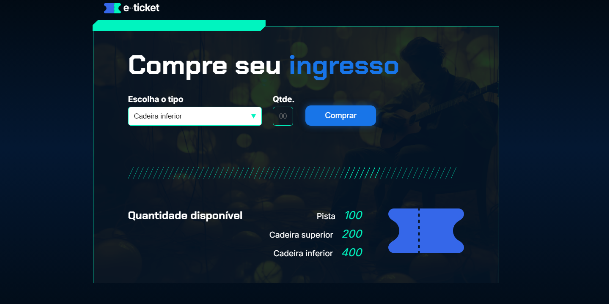
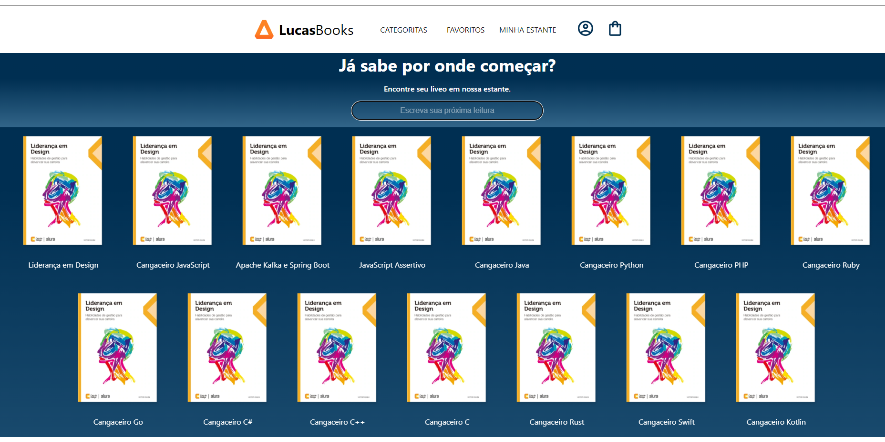

Projetos
Projetos criados para treinar habilidades e transformar conhecimentos teoricos em práticos.

Jogo baseado em descobrir um número gerado aleatóriamente.
TÉCNOLOGIAS: HTML, CSS e JavaScript.

Jogo baseado em realizar um sorteio de números dentro de uma faixa
determinada pelo usuário.
TÉCNOLOGIAS: HTML, CSS e JavaScript

Página simula um carrinho de compras aonde faz o tratamento dos dados
inseridos e devolve os valores ao usuário dentro da página.
TÉCNOLOGIAS: HTML,
CSS e
JavaScript.

Página simula compra de ingressos e limitando as compras respeitando as
quantidades disponíveis.
TÉCNOLOGIAS: HTML, CSS e JavaScript.

Uma página representando uma biblioteca online aonde pode conslutar
qualquer livro do acervo de forma dinamica.
TÉCNOLOGIAS: JavaScript,
React.